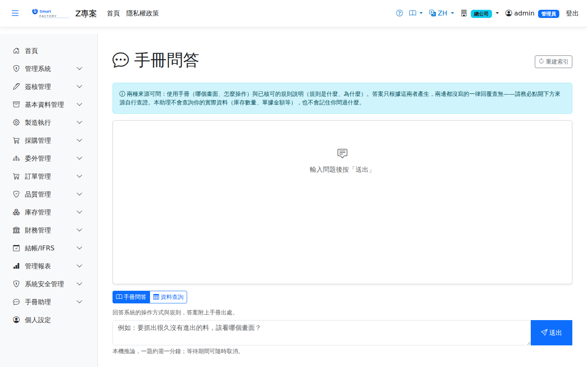

手冊問答Ask the Manual
這個畫面讓你用自己的話問問題，例如「要抓出很久沒有進出的料，該看哪個畫面」，不必先知道功能叫什麼名字。系統會先在使用手冊裡找出最相關的幾段，連同你的問題一起交給本機的語言模型，再把答案與它所依據的段落一起顯示出來。This screen lets you ask in your own words — for example "which screen shows materials with no movement for a long time" — without having to know what the function is called. The system first finds the most relevant passages in the user manual, hands them to the local language model together with your question, and then shows the answer alongside the passages it was based on.

畫面上方有兩個模式，由你自己選，系統不會替你猜：「手冊問答」讀的是使用手冊與規則說明，「資料查詢」讀的是你自己的營運資料。兩者的來源、權限與可信度都不同，所以分開。There are two modes at the top of the screen, and you choose which one — the system never guesses for you: "Manual Q&A" reads the user manual and the rule notes, while "Data query" reads your own operational data. They differ in source, permissions and how much you should trust them, which is why they are kept apart.
手冊問答Manual Q&A
它回答的是「去哪裡看、怎麼操作、規則是什麼」，不是「你的數字是多少」。它讀的是使用手冊，不是你的資料庫——在這個模式下問「上個月採購金額多少」不會得到數字，只會得到「哪一張報表看得到」。It answers "where to look, how to do it, what the rule says" — not "what your numbers are". It reads the user manual, not your database: in this mode, asking "what was last month's purchase amount" will not return a figure, only which report shows it.
操作步驟How to use it
來源的三種樣子The three kinds of source
| 樣子Appearance | 意義What it means |
|---|---|
| 可點的連結A clickable link | 使用手冊的頁面，點開即為該畫面的完整說明。A page of this user manual; click it for the full instructions for that screen. |
可展開的段落（頁碼以 rules/ 開頭）An expandable passage (its page code starts with rules/) | 規則說明。這一類內容沒有對應的手冊頁面，全文就直接展開在答案底下，不需要另外開頁。這一類段落目前只有中文一份，所以用英文介面提問時，答案是英文、這一段引文仍會是中文——它是刻意的：改成比對語系的話，英文提問一段規則都拿不到，而畫面上看起來會跟「手冊裡本來就沒寫」一模一樣。A rule explanation. This kind of content has no manual page of its own, so the full text is expanded right below the answer instead. These passages currently exist in Chinese only, so when you ask in English the answer comes back in English while this kind of citation stays in Chinese. That is deliberate: matching the language here would leave an English question with no rule passages at all, and on screen that looks exactly like "the manual never covered it". |
| 灰色純文字，標註「無從查證」Grey plain text marked "cannot be verified" | 模型引用了一個本次並未提供給它的頁碼，也就是它自己編出來的。這一段答案沒有依據，請不要採信，並改用其他方式確認。The model cited a page that was not supplied to it this time — in other words, it made the reference up. That part of the answer has no basis; do not rely on it, and confirm another way. |
資料查詢Data query
切到「資料查詢」後，你可以用一句話查營運資料，例如「有哪些品號的可用量低於安全存量」。系統會依你的問題挑一支既有的報表查詢、填好條件、執行它，再把結果整理成表格並附上一段白話說明。查詢是由系統執行的，不是由模型執行的——模型只負責「挑哪一支、填什麼條件」與最後那段說明，它全程沒有碰到資料庫。Switch to "Data query" and you can query operational data in one sentence — for example "which items have available stock below their safety level". The system picks one of the existing report queries, fills in its conditions, runs it, and returns a table with a plain-language summary. The query is run by the system, not by the model: the model only decides which query to use and what conditions to fill in, plus writes the closing summary. It never touches the database.
查不到的東西，它會直接說沒有對應的查詢，而不是拿別的資料湊。目前能用這個方式查到的只有部分報表——含金額的報表（銷售金額、庫存金額、成本）預設不開放用自然語言查詢，只能從報表畫面進入，即使你有權限也一樣。這是刻意的：同樣一份資料，用一句話反覆逼近和一步步點開報表，風險並不相同。是否開放由系統管理者設定。If nothing fits, it says there is no matching query rather than substituting other data. Only some reports are reachable this way — reports containing monetary amounts (sales value, inventory value, cost) are not available through natural language by default and must be opened from their report screens, even if you have permission for them. This is deliberate: repeatedly probing the same data one sentence at a time is not the same risk as opening a report step by step. Your system administrator decides whether to open it up.
你只查得到自己本來就有權限開的報表。廠別與資料範圍的限制也完全照舊——用問的和用點的，看到的資料範圍是同一套。You can only reach reports you are already allowed to open. Plant and data-scope restrictions apply exactly as before — asking and clicking give you the same slice of data.
注意事項Points to note
手冊沒有寫的，它會直接回覆「使用手冊中查無相關說明。」這是正確行為，不是故障。與其憑印象編一段看起來很合理的操作步驟，回答不知道對你比較有用。If the manual does not cover it, the answer is simply "not found in the user manual". That is correct behaviour, not a fault: saying so is more useful to you than inventing a plausible-looking set of steps.
它只找得到你有權限看的畫面。檢索會依你目前使用中的角色過濾——同一個問題，不同角色問到的答案可能不同，沒有權限的畫面不會出現在來源裡。It can only find screens you are allowed to see. Retrieval is filtered by the role you are currently using, so the same question may be answered differently for different roles, and screens you have no permission for never appear as sources.
同一個人一次只能問一題。上一題還在運算時再送出，會被擋下並提示你等它完成或按取消——這不是故障。推論在本機一顆 CPU 上進行，同時跑兩題只會讓兩題都變慢。若整台機器正忙，你會看到「推論服務忙碌中」，此時請稍後再試，或直接開報表畫面查——那條路不經過推論，一向是即時的。One question at a time per person. Sending another while the previous one is still running is refused with a prompt to wait or cancel — this is not a fault. Inference runs on a single local CPU, and running two questions at once merely makes both slower. If the whole machine is busy you will see "inference service is busy"; wait and retry, or simply open the report screen instead — that path does not involve inference and is always immediate.
你問過什麼不會被保留。提問與答案都不寫入任何索引或資料表，關掉畫面就沒有了，也不會出現在別人的搜尋結果裡。同樣的，助理也不記得你上一題問了什麼——每一題都是獨立的。Your questions are not kept. Neither the question nor the answer is written to any index or table; they are gone when you leave the page and can never turn up in anyone else's results. By the same token the assistant does not remember your previous question — each one stands alone.
若畫面上方出現黃色的「推論服務尚未就緒」，代表本機的語言模型沒有啟動或模型檔尚未安裝，訊息中會寫明是哪一種。此時仍可開啟畫面，但問不出答案，請聯繫系統管理者。A yellow "inference service is not ready" banner means the local language model is not running or the model files are not installed; the message says which. You can still open the screen but cannot get answers — contact your system administrator.
重建索引Rebuilding the index
右上角的「重建索引」只有具備本畫面修改權限的角色看得到。使用手冊更新後，索引會在系統下次啟動時自動更新；這個按鈕是給「不重啟也想立刻生效」的情況用的。重建會用到推論資源，但提問一律優先——有人在問的時候重建會自己讓路，所以它不會把別人的提問卡住，代價是重建本身在忙碌時會拖得比較久（可能數分鐘以上）。仍建議避開上班尖峰。The Rebuild index button in the top right is only visible to roles with update permission on this screen. After the manual is updated the index refreshes automatically at the next system start; this button is for when you want it to take effect without a restart. Rebuilding uses inference resources, but questions always take priority — the rebuild yields whenever someone is asking, so it will not hold anyone up; the cost is that the rebuild itself takes longer when the system is busy (possibly well over several minutes). Avoiding busy periods is still advisable.